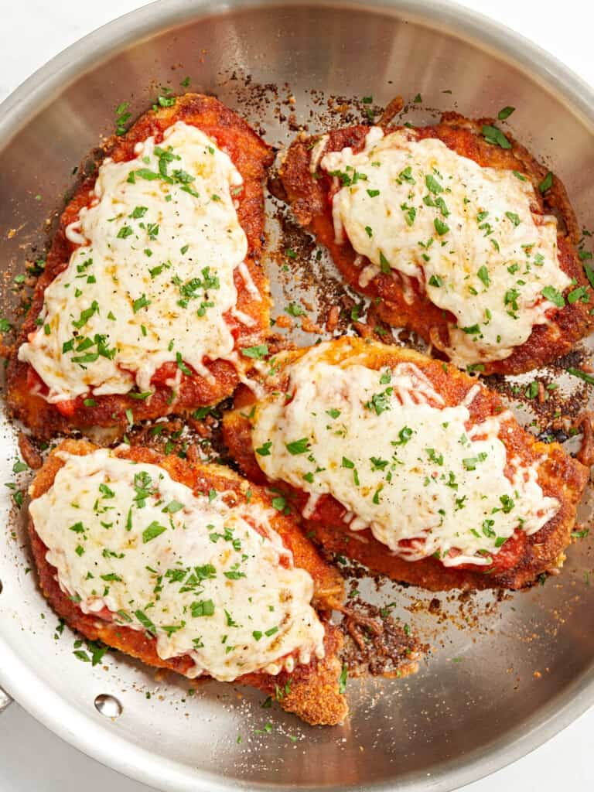

Chicken Parmesan

Description
You'll probably recognize Chicken Parmesan as a dish from every American-Italian restaurant menu. It is a dish that consists of breaded chicken breast covered in tomato sauce and mozzarella, parmesan, or even provolone cheese.
Ingredients
- Chicken Breasts: 2 large boneless, skinless chicken breast
- Breadcrumbs: 1 cup plain breadcrumbs to season to your liking
- Grated Parmesan: 1/3 cup pre-grated or grate your own
- Seasonings:
- 1 tsp Garlic Powder
- 1 tsp Italian Seasoning
- 1 tsp Salt
- Freshly cracked black pepper
- Egg: 1 egg to adhere the breading to the chicken
- All-Purpose Flour:1/2 cup to thicken the sauce
- Cooking Oil: 1/4 cup of any neutral oil that you like to cook with
- Marinara Sauce: 1/2 cup of your favorite homemade or jarred marinara sauce
- Mozzarella Cheese/Provolone: 1 cup of pre-shredded or shred your own low moisture, whole-milk mozzarella works best. You can use Provolone cheese if you prefer.
- Fresh Parsley: 1 Tbsp chopped, fresh parsley. Optional
Steps
- Use a sharp knife to carefully filet the chicken breasts lengthwise into two cutlets, making 4 cutlets total. You can also use pre-cut chicken cutlets.
- Lightly season both sides of the chicken with a pinch of salt and pepper, Italian seasoning, and garlic powder.
- In a wide shallow bowl or container, combine the bread crumbs, parmesan, garlic powder, Italian seasoning, salt, and some freshly cracked pepper.
- In a separate wide shallow bowl or container, whisk the egg until smooth.
- In a third shallow bowl, add the flour.
- Dredge each piece of chicken into the flour, dusting off any excess. Then, dip in the egg mixture, making sure to fully coat the chicken and dripping off any excess. Finally, dip the chicken in the seasoned bread crumbs, again coating well on both sides.
- Heat the cooking oil in a large skillet over medium-high heat. When the skillet and oil are very hot, add the chicken and cook on the first side until golden brown, about 5 minutes.
- Flip the chicken and turn the heat down to medium. Top each cutlet with 2 tbsp of marinara sauce and ¼ cup shredded mozzarella cheese. Place a lid on the skillet to allow the cheese to fully melt, the marinara sauce to warm up, and the chicken to cook all the way through, about 5-7 more minutes.
- Top the chicken with fresh chopped parsley (optional) and serve with spaghetti and additional marinara.